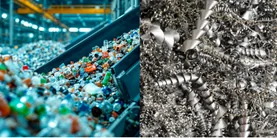
M-01 · Insumos recuperados
Viruta de aluminio + polímero
Metálica: viruta de mecanizado (torno, CNC) y recortes de chapa o caño. Polimérica: bandejas termoformadas de la logística de autopartes y radiadores.
Módulo desplegable para seguridad, descanso y sombra del trabajador.
Un panel de 240 mm de espesor. Un solo operario lo posiciona en el frente de obra.
Se libera la traba del bastidor. Las bisagras reforzadas quedan listas para girar.
Los paneles laterales giran sobre sus bisagras y la cubierta se abre desde el marco.
Los cerramientos laterales completan el volumen y delimitan el área de trabajo.
2600 × 2600 mm de sombra y resguardo, sin herramientas ni estructura auxiliar.
En obras al aire libre (viales, espacios públicos), los trabajadores carecen de infraestructura estandarizada que garantice sombra y seguridad durante sus descansos.
El módulo SRDO/01 resuelve tanto la delimitación perimetral como la creación de un espacio seguro de descanso en autopistas, frentes de obra vial, cortes urbanos y cerramientos provisorios.
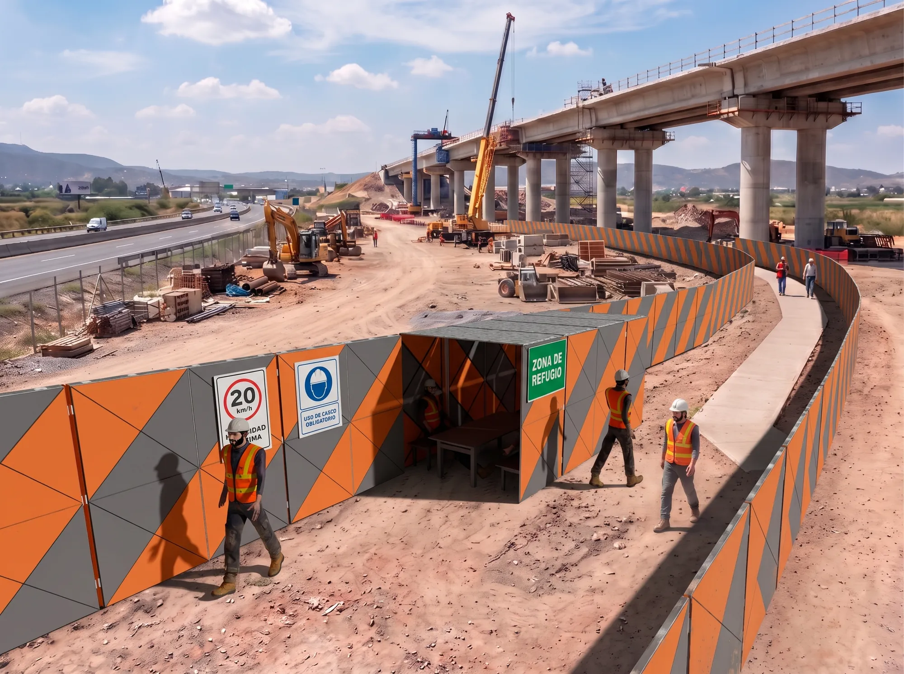
Sin SRDO/01Con SRDO/01Un carro base desmontable con ruedas, vinculado al marco principal, permite desplazar el módulo de forma manual desde el punto de descarga del camión hasta su ubicación definitiva.
Estado Plegado · en carroPlegado, el módulo se reduce a un panel de 240 mm de espesor, optimizado para traslado, estiba y descarga logística.
Espesor 240 mmLos paneles laterales giran sobre bisagras reforzadas y la cubierta se abre desde el bastidor perimetral en perfil C 80 × 40 mm.
Planta 2600 × 2600 mmEncadenados en configuración lineal, los módulos generan un espacio operativo listo para resguardo y, al mismo tiempo, delimitan el frente de obra.
Configuración Lineal · modularUn lugar estandarizado y seguro para las pausas del trabajador, separado del tránsito y protegido del sol.
Altura libre 2600 mm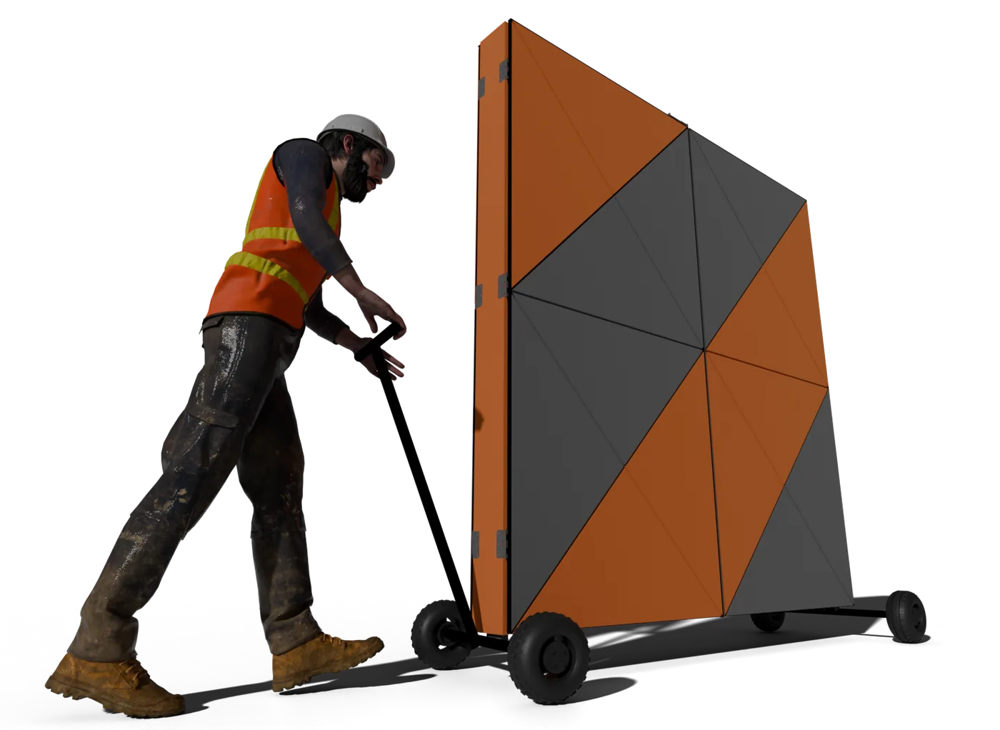
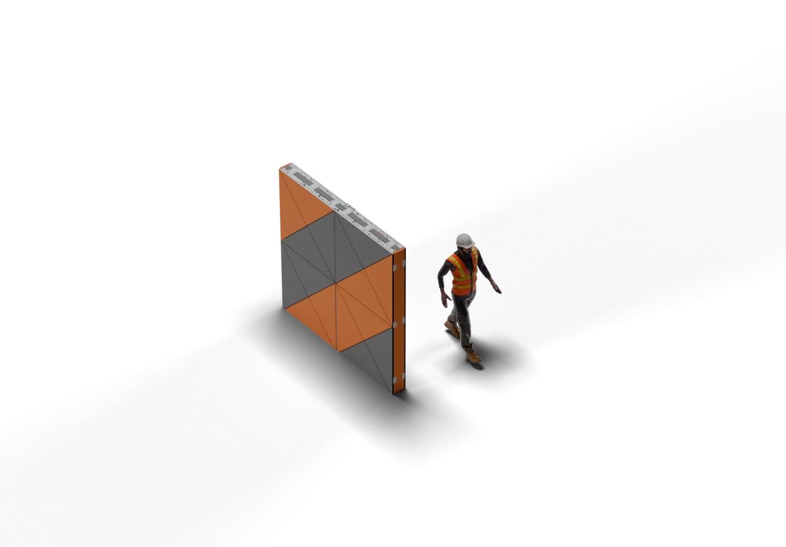
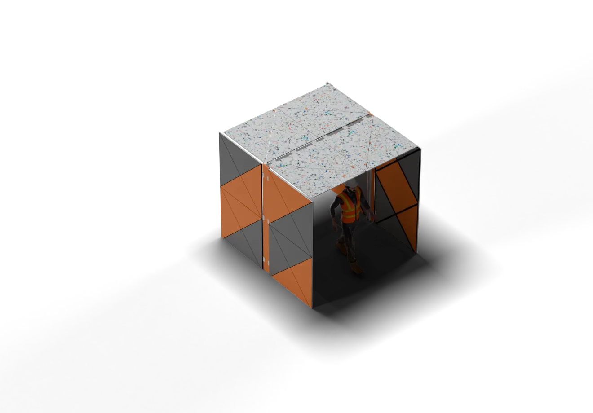
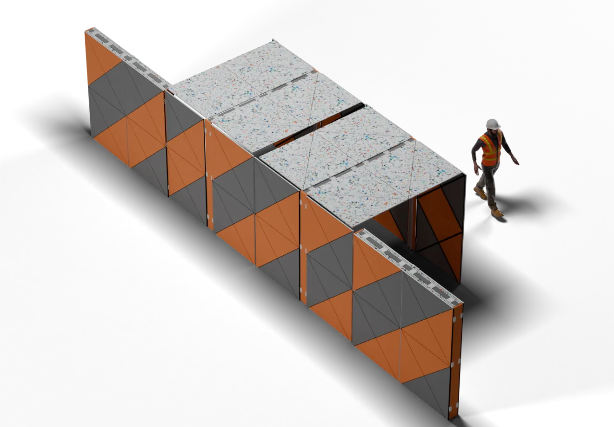
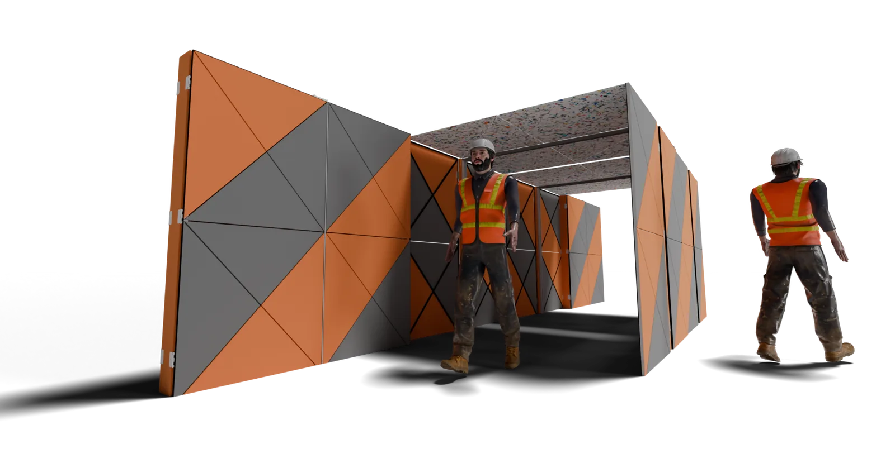
Componentes estándar y uniones abulonadas: cada pieza se puede reemplazar, reutilizar o reciclar al final de su ciclo de vida. Tocá los puntos para ver cada componente.
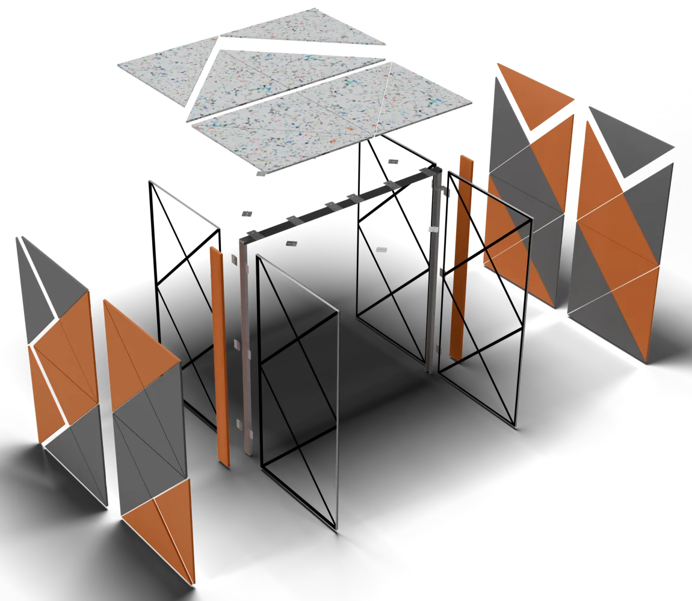
Diseñado para uso efímero. Su fabricación se basa en la recuperación de descartes de la industria metalmecánica (virutas de mecanizado, bandejas termoformadas), promoviendo la economía circular.

Metálica: viruta de mecanizado (torno, CNC) y recortes de chapa o caño. Polimérica: bandejas termoformadas de la logística de autopartes y radiadores.
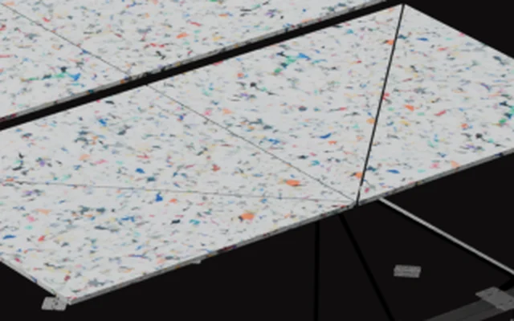
Placa de compuesto reciclado de viruta de aluminio y polímero recuperado: la textura moteada muestra su origen.
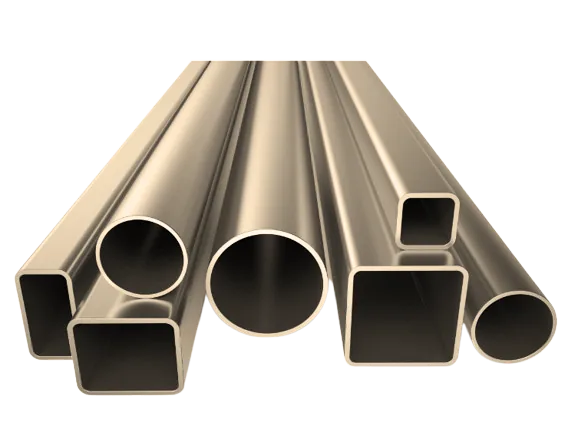
Perfiles estructurales (caños y planchuelas), bisagras y bulonería comercial, seleccionados para facilitar su desensamble, reutilización o reciclaje.
del volumen en paneles compuestos
Paneles compuestos: moldeo por compresión. Una mezcla de viruta de aluminio y plástico triturado recuperado actúa como matriz aglutinante bajo presión y temperatura controlada.
Estructura metálica: corte láser y soldadura MIG para conformar el bastidor principal, que vincula cerramientos y cubierta mediante bisagras de alta resistencia.
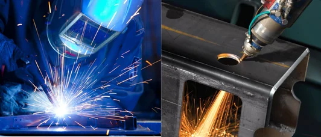
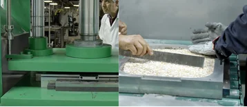
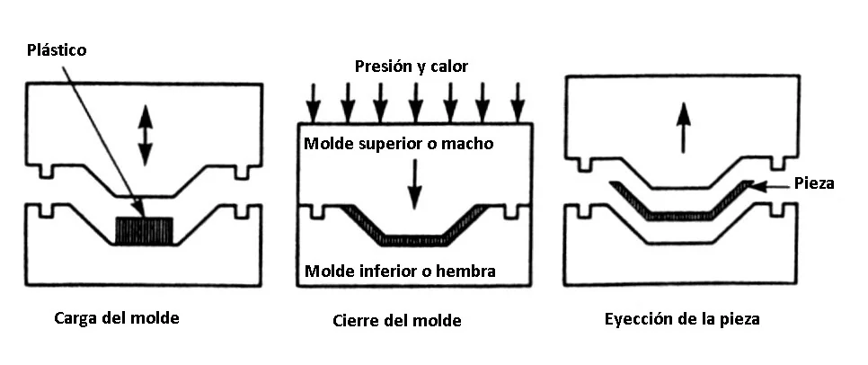
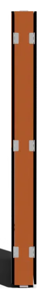
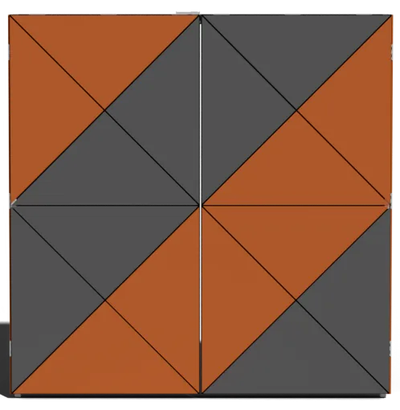
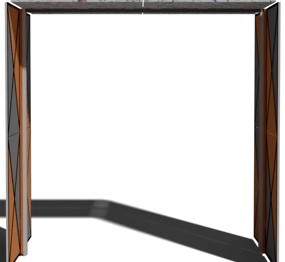
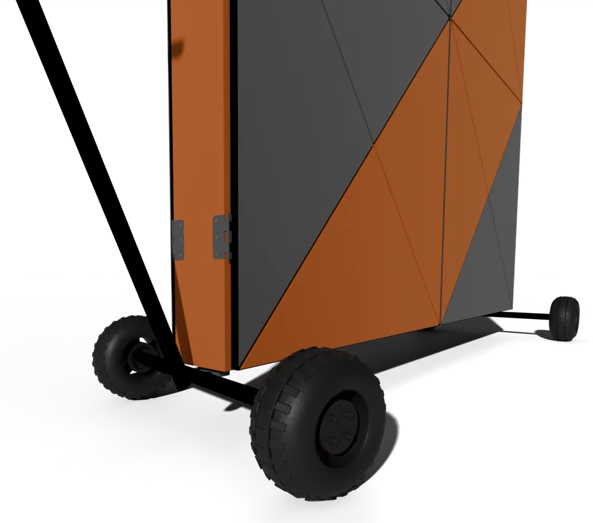
Carro base desmontable con ruedas vinculado al marco principal: el módulo se desplaza manualmente desde el punto de descarga del camión hasta su ubicación definitiva.
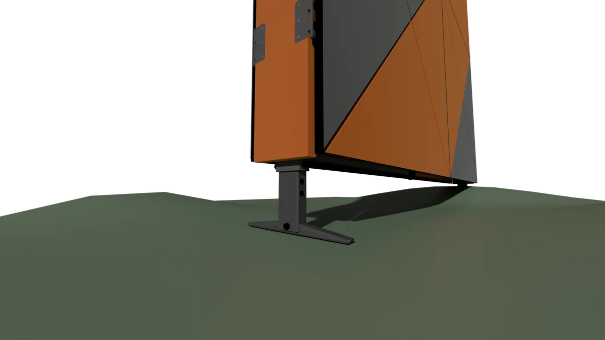
Sistema de patas regulables integradas para absorber desniveles y garantizar la estabilidad estructural sobre terrenos irregulares.